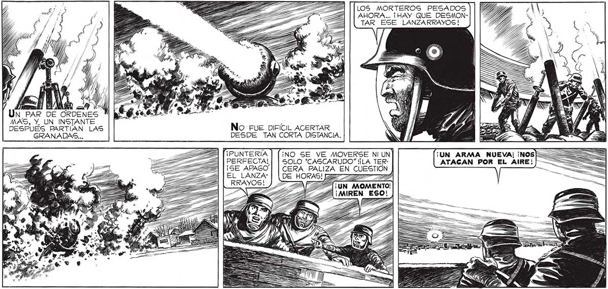

112 SY SON UN PAR DE CENTENARES, 5 POR _LO MENOS! ¡ESTÁN A TRES | CUADRAS, CON ==, ¡A GUS PUESTOS TODOS! ¡MAN- WN NW IL TENER LA CALMA! ¿ALGUNO VIO N NW N É (TIENE QUE SER EN ESTA ESDESDE DÓNDE ATACAN? ¿Y CUANTOS2/N J | QUINA... ES DECIR, A TRESCIENTOS CUARENTA Y DOS METROS. CONTRAATACAREMOS CON UNA ANDANADA uy, === WWW, 9 1) NS Ñ y Y BLA ) PA | MVE » ES ALIS 8 ¿Na % 1" EA : k ES y S 12 2] E A SH ——E a % EE 7, ) A S A AX< EU A SS A z —— SO NA Ñ == No SÉ QUIEN FUE EL HÉROE ANONIMO QUE SE ATREVIÓ A ASOMARSE PARA HACER LA OBSERVACION. 2 > AHORA... ¡HAY QUE DESMON> 2 >| [LOS MORTEROS PESADOS ||| E [TAR ESE LANZARRAYOS! E 4 NW NN y A AARÓN ) El E AE | Un PAR DE ORDENES MAS, Y. UN INSTANTE ) DESPUÉS PARTIAN LAS No FUE DIFÍCIL ACERTAR GRANADAS... DESDE TAN CORTA DISTANCIA. ¡PUNTERIA ¡NO SE VE MOVERSE NI UN PERFECTA! | | SOLO "CASCARUDO” !¡LA TER¡SE APAGO CERA PALIZA EN CUESTION EL LANZA- A RRAYOS! (¡UN MOMENTO! ¡MIREN_ESO! <= E XT UA
